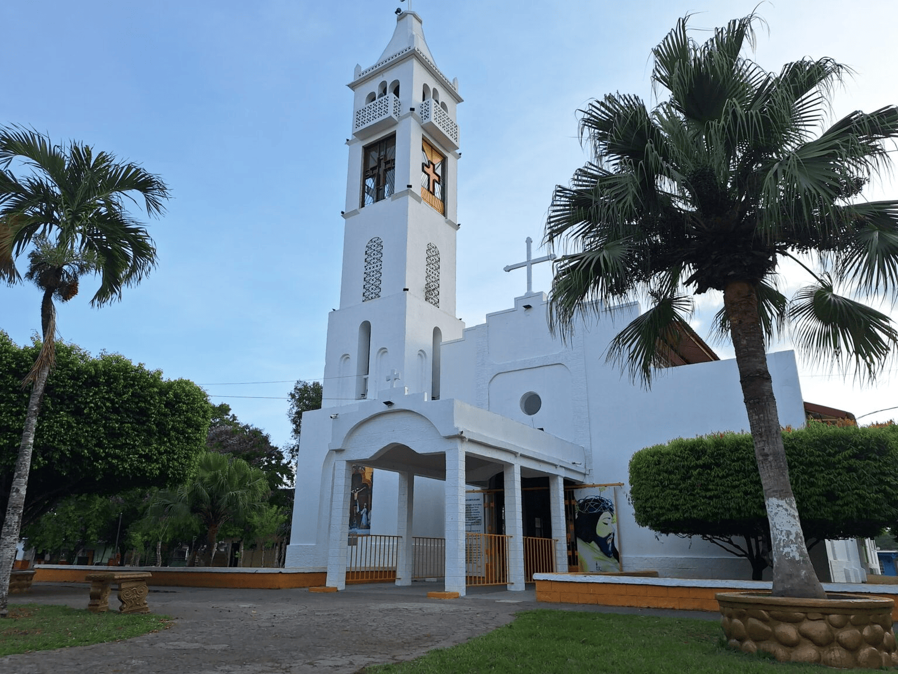
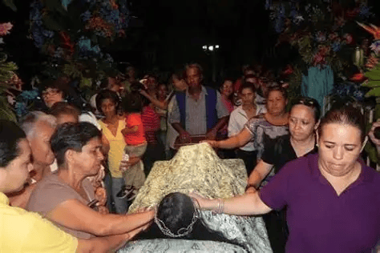
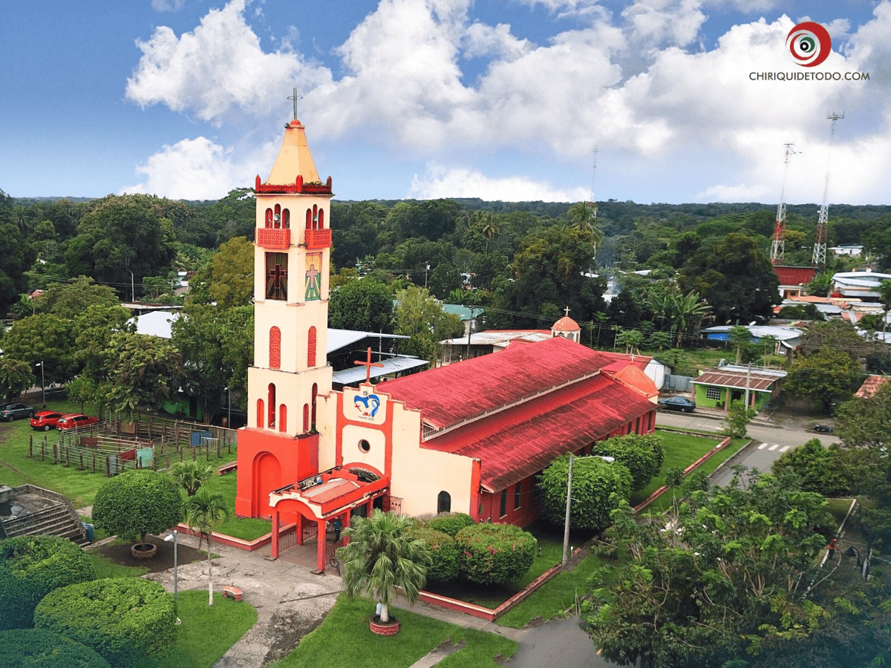

Nuestra Historia

El Santuario del Cristo de Alanje
Uno de los centros religiosos más visitados de Panamá, que recibe miles de peregrinos cada año.

Patrimonio Cultural
Alanje es reconocido por su riqueza cultural y sus tradiciones arraigadas.

Importancia Histórica
Su historia refleja el crecimiento y la identidad de la provincia de Chiriquí.